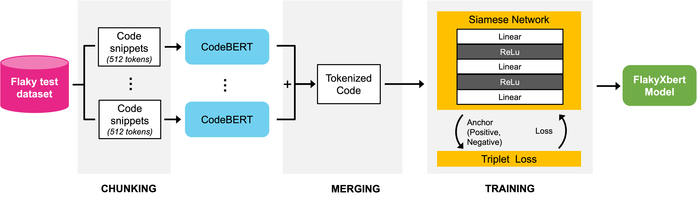
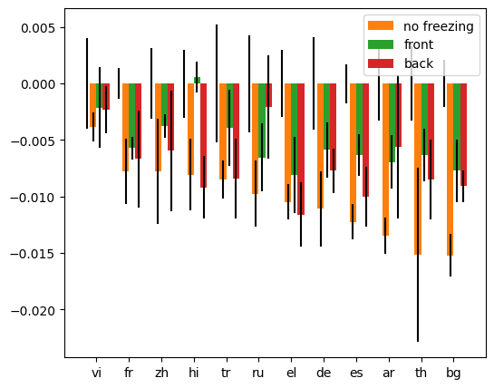
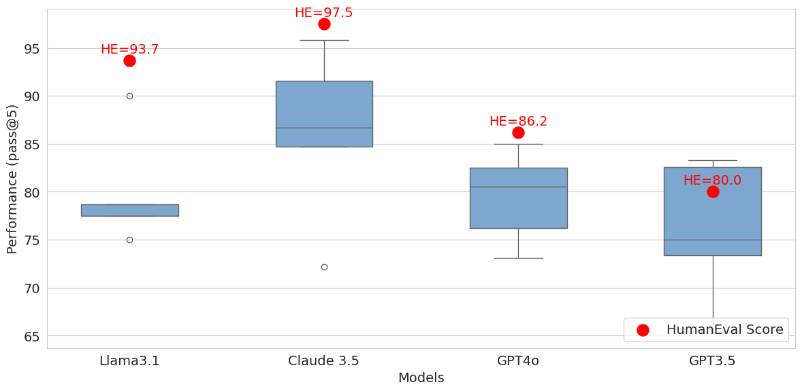
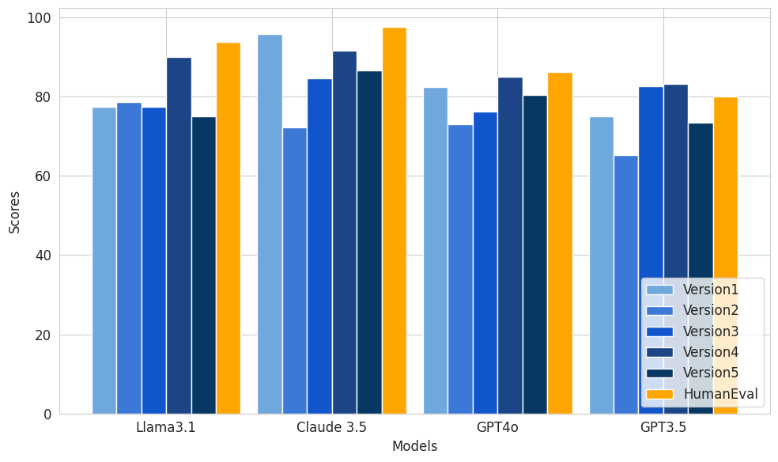
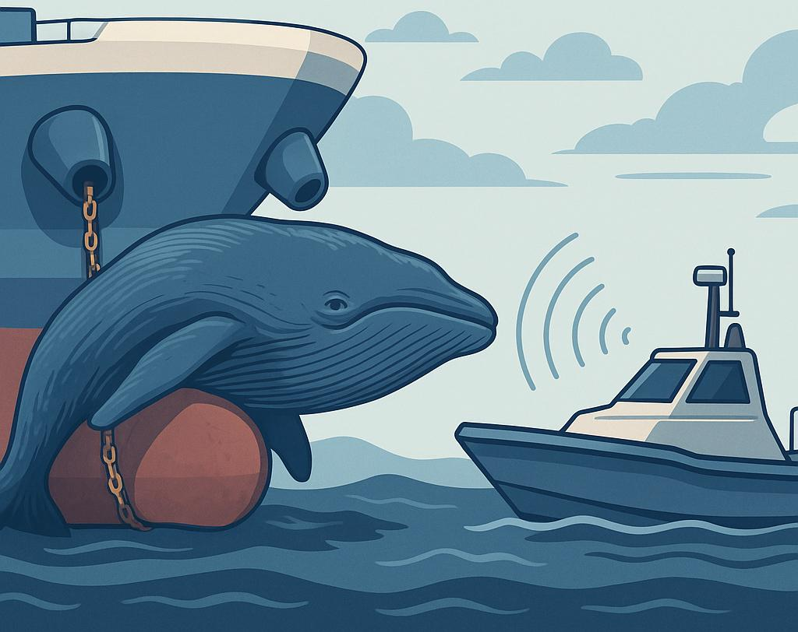

About Me
I’m Riddhi, a passionate AI and NLP developer and researcher specializing in large language models, fairness, and scalable automation. I blend strong hands-on software engineering with academic research, aiming to create AI that meaningfully helps people and organizations—especially for resource-constrained or underserved settings.
My focus is building and deploying LLMs, conversational agents, robust ML/NLP backends, and tools for trustworthy, scalable, real-world automation. I’m also dedicated to digital education, open science, and helping others grow through teaching.
My focus is building and deploying LLMs, conversational agents, robust ML/NLP backends, and tools for trustworthy, scalable, real-world automation. I’m also dedicated to digital education, open science, and helping others grow through teaching.
Education
Ontario Tech University, Canada
MSc in Computer Science, Thesis-based | 2023 – 2025 · GPA: 4.2/4.3
Thesis: Integrating transformer-based NLP in software testing; research on automation and efficiency using LLMs (BERT, Python).
Courses: Advanced NLP, Research Methodologies, Software Design & Project Management
Courses: Advanced NLP, Research Methodologies, Software Design & Project Management
University of Mumbai, India
B.E. in Computer Engineering | 2019 – 2023 · GPA: 9.11/10
Thesis: Reinforcement Learning for whale-ship collision avoidance using lidar data (Unity, ML-Agents).
Courses: Data Structures & Algorithms, DBMS, OS, AI, Computer Vision, Machine Learning
Courses: Data Structures & Algorithms, DBMS, OS, AI, Computer Vision, Machine Learning
Professional Experience
Software and AI Researcher
Software Engineering & Education Research Lab, Canada | Sep 2023 – Present
Key Projects:
- FlakyXbert: Advanced LLM techniques for flaky test detection; improved accuracy by 20%, 80% computational savings, data leakage mitigation, model fairness in low-resource settings.
- LLM-Powered Agentic Research Assistant: Complete research pipeline for rapid, private literature review and knowledge management (LangGraph, Ollama, RAG, FAISS, Tavily API); reduced review time by 65%.
- HumanEval Data Leakage Mitigation: Template-based combinatorial framework for fair LLM evaluation, adopted by community; improved benchmark reliability by 40%.
NLP Researcher
Lee Language Lab, Canada | Jan 2024 – Sep 2024
- ALIGNFREEZE: Realignment analysis for multilingual models; evaluation framework for 15+ languages, benchmarking alignment safety, research accepted at NAACL 2025.
Teaching Assistant
Ontario Tech University | Sep 2023 – Apr 2025
- Mentored 500+ students (Software Quality Assurance & Data Analysis). Designed automated grading, interactive modules, led labs, improved performance and satisfaction.
Software Engineer Intern
Google & TalentSprint, India | Feb 2020 – Sep 2022
- Built and optimized core infra (efficient data structures/algorithms in Python, Agile, Git) for enterprise-grade solutions; led codebase improvements, reduced processing runtimes 30%.
- Developed NLP-based intelligent chatbot—intent recognition, entity extraction, sentiment analysis, automated routing (85%+ accuracy), and customer support automation (60% faster response).
Selected Projects
FlakyXbert: LLM Optimization for Flaky Test Detection
Developed advanced model for flaky test detection in software testing using LLMs, with data leakage and fairness safeguards. Delivered 20%+ accuracy improvement in low-resource conditions.
Python
LLMs
ML
Agentic Research Assistant
Created end-to-end agent for literature review and knowledge base construction with private local inference; automated context injection cut review time by 65%.
Python
RAG
LangGraph
Docker
HumanEval Leakage Mitigation
Developed industry-adopted combinatorial framework for leakage mitigation and reliable program synthesis benchmarks. Raised reliability standards for the community.
Python
Testing
MLOps
ALIGNFREEZE: Multilingual LLM Realignment
Built realignment analysis framework for 30+ languages assessing layer behavior in LLMs during fine-tuning, accepted at NAACL 2025.
PyTorch
Transformers
Multilingual AI
Publications

An Analysis of LLM Fine-Tuning and Few-Shot Learning for Flaky Test Detection and Classification
ICST 2025
LLM
Software Engineering
Abstract: We introduce a data-efficient approach using fine-tuned LLMs and few-shot Siamese networks for classifying flaky software tests. Our FlakyXbert model leverages knowledge distillation, data augmentation, and fairness-aware strategies to improve flaky test detection accuracy in enterprise environments by over 20%. This study establishes actionable LLM-based baselines for test reliability under realistic, resource-constrained conditions.
Paper & Code

ALIGNFREEZE: Navigating the Impact of Realignment on the Layers of Multilingual Models Across Multiple Languages
NAACL 2025
Multilingual NLP
Alignment
Abstract: This work presents ALIGNFREEZE, a framework and evaluation suite studying how fine-tuning and realignment affect the inner workings of large multilingual language models (LLMs) like XLM-R and mBERT. Probing over 15 languages, we reveal which layers and representations become robust or fragile under various alignment strategies, informing safe and fair deployment of multilingual LLMs. Accepted as a regular (full) paper at NAACL 2025, contributing new benchmarks to the community.
Paper & Code

Addressing Data Leakage in HumanEval Using Combinatorial Test Design
ICST 2025
LLM Evaluation
Benchmarking
Abstract: This paper exposes and addresses major data leakage issues in the widely-adopted HumanEval benchmark, used for LLM code generation testing. By proposing a robust, combinatorial design for test splitting and coverage validation, we provide the first automatic system for data contamination discovery—improving reliability standards for LLM program synthesis evaluation by over 40%.
Paper & Code

Assessing Data Augmentation-Induced Bias in Training and Testing of Machine Learning Models
Fairness Workshop 2025
Bias
Experimentation
Abstract: Investigates how common data augmentation techniques can unintentionally bias both training and evaluation of ML models. Through controlled experiments on multiple datasets, we show that augmentation-driven class imbalance and complexity shifts affect fairness, robustness, and downstream generalization—highlighting best practices for equitable, unbiased ML pipelines.
Paper & Code

Automated Collision Avoidance of Unmanned Maritime Vehicles using Reinforcement Learning
Maritime AI
Reinforcement Learning
Thesis
Abstract: This thesis introduces a reinforcement learning framework for real-time collision avoidance in autonomous maritime vehicles. Using Unity simulation with lidar-derived sensor streams, the system trains agents to anticipate and prevent ship-whale collisions, paving the way for safer, AI-assisted navigation with significant implications for maritime environmental protection. The work demonstrates successful deployment of RL policies in noisy, real-world-inspired conditions.
Technical Skills
Python
TypeScript
React.js
PyTorch
TensorFlow
Hugging Face
Transformers
LangChain
RAG
Docker
SQL
C++
JavaScript
NLP
LLMOps
MLOps
Agile/Scrum
AWS
Unity
Research
Certifications:
- IBM Machine Learning Specialization (2022)
- Supervised/Unsupervised/Deep Learning (2022)
- Applied Scrum for Agile Project Management (2022)
Contact
Let's connect!
Open to collaborations, research, and AI/ML opportunities—or just a friendly chat about AI, fairness, and technology.
- Email: more.riddhi11@gmail.com
- Location: Toronto, Canada
- GitHub: MsMore
- LinkedIn: linkedin.com/in/riddhi-more
Want a copy of my latest CV? Download Here.